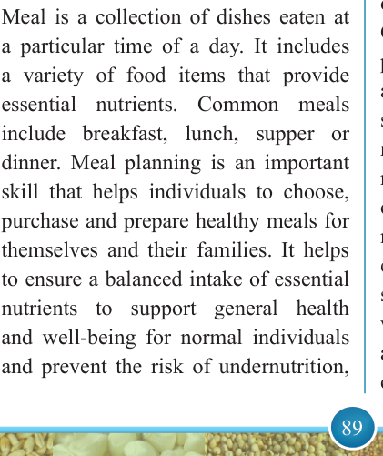
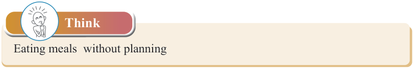
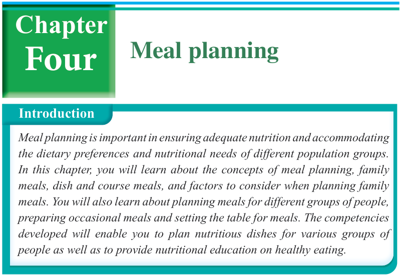

89


Food and Human Nutrition

Form Two

Think
Eating meals without planning

Meal planning
Introduction
Meal planning is important in ensuring adequate nutrition and accommodating the dietary preferences and nutritional needs of different population groups.
In this chapter, you will learn about the concepts of meal planning, family meals, dish and course meals, and factors to consider when planning family meals. You will also learn about planning meals for different groups of people, preparing occasional meals and setting the table for meals. The competencies developed will enable you to plan nutritious dishes for various groups of people as well as to provide nutritional education on healthy eating.
Four
Chapter
The concept of meal planning
Meal is a collection of dishes eaten at a particular time of a day. It includes a variety of food items that provide essential nutrients. Common meals include breakfast, lunch, supper or dinner. Meal planning is an important skill that helps individuals to choose, purchase and prepare healthy meals for themselves and their families. It helps to ensure a balanced intake of essential nutrients to support general health and well-being for normal individuals and prevent the risk of undernutrition,
micronutrient deficiencies, overweight or obesity, and Diet-Related Non- Communicable
Diseases.
Meal
planning is both a science and an art since it involves the scientific selection of foods to meet nutritional needs for optimal health while also requiring the artistic skill of blending colours, texture and flavour to create meals that are visually appealing and enjoyable to eat. For individuals with special dietary needs such as pregnant women, lactating women, children, adolescents, elderly and those with chronic health conditions including
17/09/2025 16:30